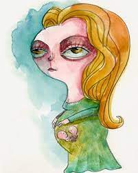

Bio -
Remedios Mascote is the youngest daughter of the seven daughters of Don Apolinor Moscote. Colonel Aureliano Buendia demands her father to marry her. When they get married Remedios was not even mature. She is childish and when she comes into Buendía household she made the house happy. She decorates her room with dolls and toys of her recent childhood.
Death
The death of Remedios is because of pregnancy complications. She was pregnant with twins at the time she died. She dies one week before the date set for the wedding of Rebeca. Amaranta had prayed for something to happen which will postpone the marriage for indefinite time because she also loved Pietro Crespi and did not wanted Rebeca to marry him. Now she felt guilty of Remedios' death. She did not expected this to happen.

Name: Remedios Moscote Father: Don Apolinor Moscote Mother: Born: Death: Cause of Death: Pregnancy Complications Lover: No One Spouse: Colonel Aureliano Buendía Generation: Second Children: None Resembles: No One
Behaviour
Remedios is a child but she is exited by the idea of getting married. She brought merriment into the Buendía house.